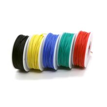

Набор силиконовых многожильных проводов 26 AWG, 5 цветов по 10 м
ПроводаЭто набор гибких многожильных проводов в силиконовой изоляции: 26 AWG, 5 цветов, по 10 м каждого цвета. Используется для макетирования, подключения модулей, робототехники и других низковольтных соединений, где важны мягкость и стойкость изоляции.
Силиконовая изоляция делает провод очень гибким и удобным для частых изгибов, монтажа в тесных местах и ручной пайки. Формат набора из 5 цветов помогает удобно разводить питание, сигналы и землю в проектах. Калибр 26 AWG обычно выбирают для слабых и средних токов в коротких соединениях, когда важнее удобство прокладки, чем минимальное сопротивление. Такой провод часто применяют в DIY-электронике, RC-моделях, робототехнике и при подключении плат и датчиков. По данной позиции это, по сути, типовой комплект силиконового монтажного провода без уникальной канонической модели.